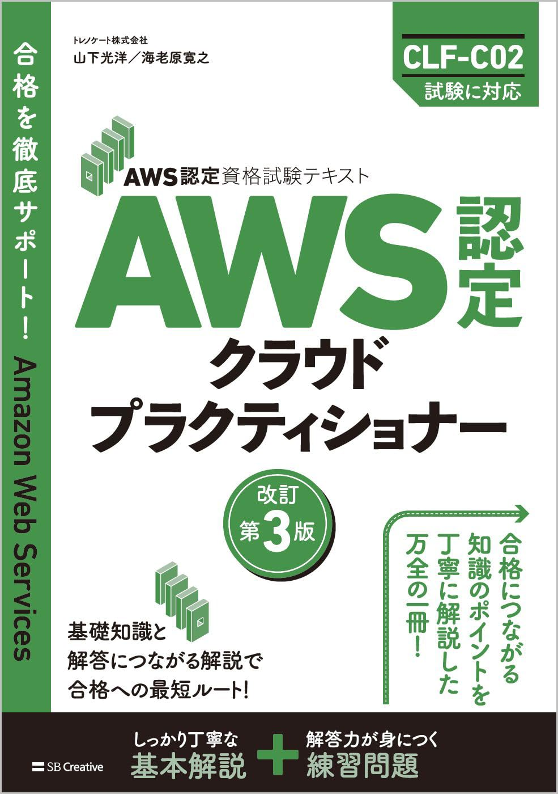
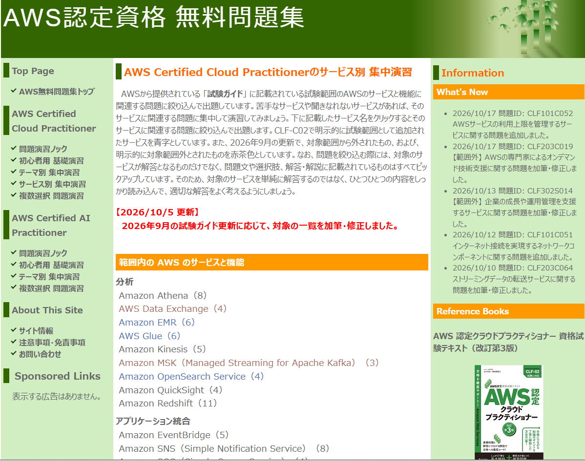

社長から急に「AWSの案件が来るから、AWS Practitionerを取っといて」と言われたので、適当に勉強して１か月でとった時の話です。
仕事しながらAWS Practitionerに受かるまでの、合格した過程をここに記しておきます。
参考書

自分はこの参考書を購入し、通勤時間を使って3周ほど読みました。
知識のインプットで言うと、この参考書だけで十分です。
AWSの資格の勉強法について調べると、Udemyの教材をおすすめしている方をよく見ますが
AWS Practitionerほどのレベルでは、必要ないです。
深く理解したいと思っている方はもちろん利用するべきだと思いますが、
自分のように「会社に取れと言われたから取る」程度の人であれば
AWSのサービスの名前(ほとんどアルファベット3文字)とその機能をなんとなく覚えていれば
受かってしまう、暗記ゲーです。
練習問題
ある程度インプットできたなと思ったタイミングで、次は練習問題を解きました。
使ったのは参考書の章ごとについている練習問題(かなり充実していると思う)と
AWS認定資格 無料問題集というウェブサイトです。

このウェブサイト、少し古い情報もありますが、無料で大量の問題を解くことができ、
テーマや、AWSサービスに絞って解くことができるので、
自分の苦手な分野(自分はAIやデータ分析系でした)を重点的に問題を解くことができます。
AWSが公式で出している教材や、無料枠で使用できるAWSのサービスは一切使いませんでした。
理由は、日本語対応が中途半端でわかりづらいから。
これらも合格するだけなら、必要ありません。
テスト当日
手ぶらでテスト会場に行き、試験を受けました。
当日、自分の読んでいた参考書の問題と出題の形式がすこし違って、前半はかなり戸惑いました。
何を問われているのか、いまいちわからない...
英語の文章を直訳したような問題
ですが、問題を解いている途中で、「こういうことを問われているんだな」という傾向が分かってきて、
何とか問題を２週して解きなおしました。
不安な問題を見返せる機能があるので、不安な問題はきちんと🚩を押しておいてください。
(忘れるとその問題にまたたどり着くのがめんどくさい)
テスト結果
試験が終わっても、合格したかどうかはテストセンターでは教えてくれません。
自分の場合は17時ごろに試験を受けたのですが、夜20時過ぎごろに合格のメールが届きました。
結果は82/100点
70以上で合格なので、勉強しすぎず、落ちない程度の一番丁度いい点数で受かったと思います。
次の資格
AWSの資格に一回受かると、次のAWSの資格を受ける際の受験料が安くなるクーポンがAWSから与えられます。
半額程度になるので、取りたい方は次はSAAをお勧めします。
SAAまで持っていれば転職でかなり有利らしいので。